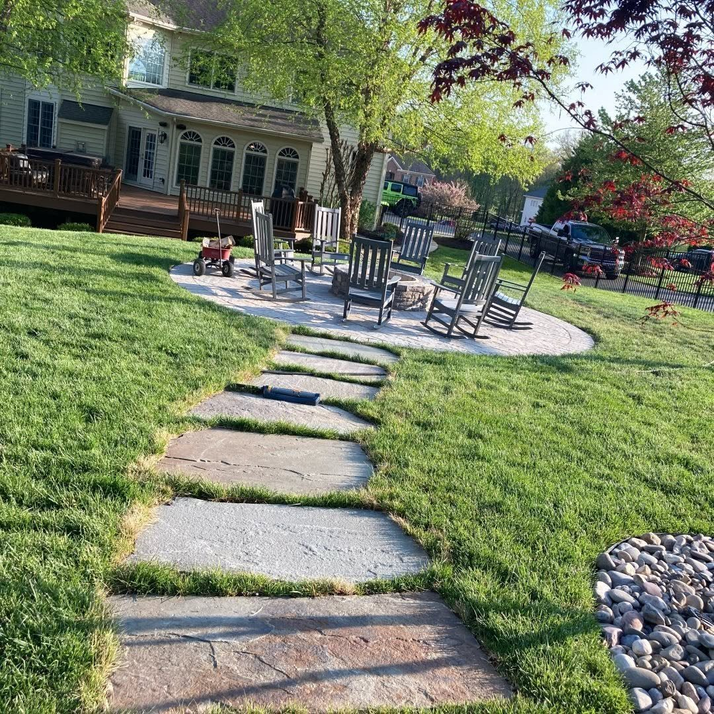
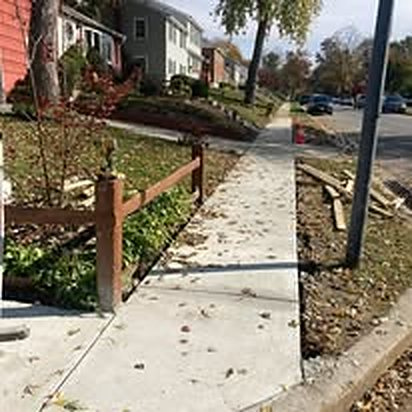

Home › Services › Patios, Walkways & Pool Decks
Patios, walkways & pool decks in Baltimore County
JAM Construction builds paver and flagstone patios, front walkways, concrete sidewalks, steps and pool decks for homes across Baltimore County.
Every patio and walkway is built on a properly compacted base, so it stays flat and solid.
What we do
- Paver patios
- Flagstone patios and paths
- Front entry walkways
- Concrete sidewalks
- Pool decks
- Steps and patio fire pits
Recent jobs




Where we work
Across Baltimore County, including Towson, Cockeysville, Timonium, Hunt Valley, Lutherville.
How to get a free estimate
Text Jorge a few photos of the area and a short description of what you need. He'll get back to you to talk it over and give you a free estimate. Se habla español.